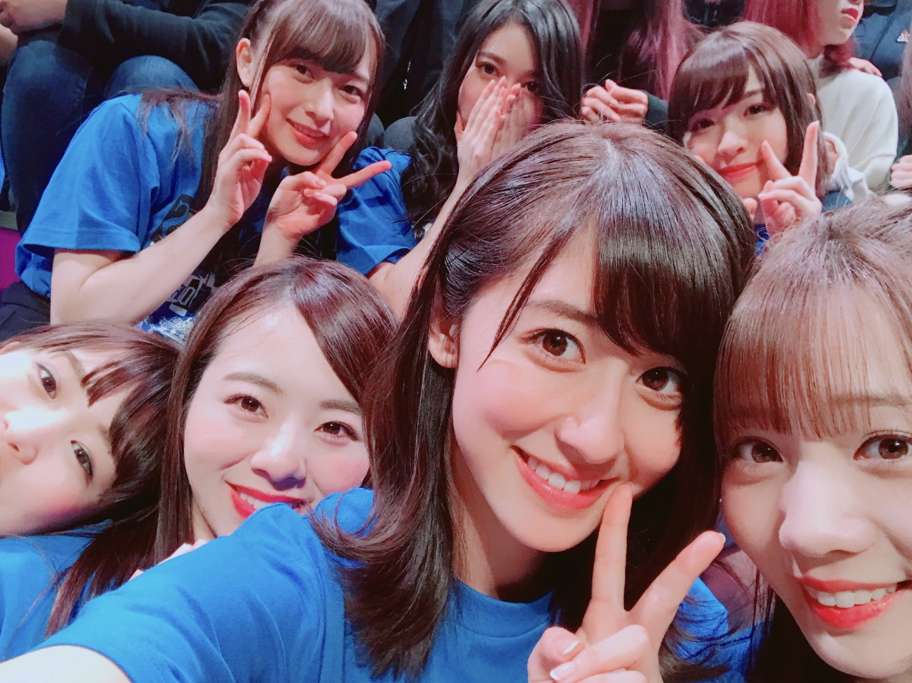
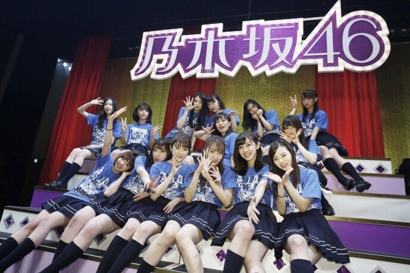
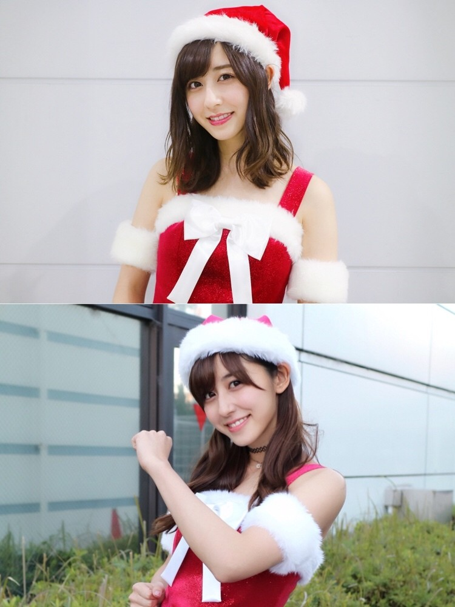
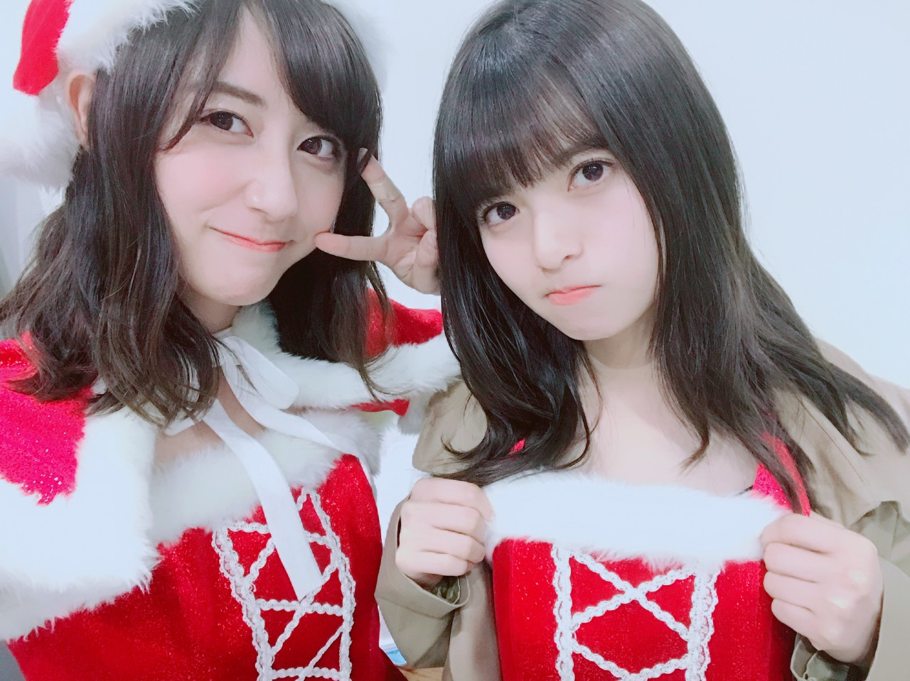

| 2017/12 24 Sun | 斎藤ちはる アンダーライブとサンタさんと |
ちはるーむへようこそ
アンダーライブ近畿・四国シリーズが
先日無事終了致しました！
来てくださった皆さん
本当にありがとうございました。

昨日の握手会で
九州とはまた違った雰囲気で楽しかったよ！
と沢山の方に言っていただけて
とても嬉しかったです
こちらこそ楽しかったです！
今回はアンダーライブの原点に戻って
私たちも楽しみながら
お客さんに楽しかった！って
笑顔で帰ってもらえるような
ライブを目指しました。
みんなで汗かいて沢山盛り上がって
笑顔でパフォーマンスをする。
これぞアンダーライブ！
そして表題曲を1曲も披露しませんでした。
アンダー曲やユニット曲のみで。
これもアンダーライブ！
また、全員が曲中の煽りを担当するというのにも挑戦して
一人一人がちゃんと輝くようにと
演出していただきました。
全体のライブではなかなか出来ない。
これもまたアンダーライブ！
ユニットコーナー。
九州シリーズではかりんと2人で「隙間」でしたが
今回は、愛未、純奈、ちまと4人で「立ち直り中」を披露させていただきました！
Aメロの最初とDメロのまいやんパートを
歌わせていただきまして...
難しかったけどとっても嬉しかったな！
落ちサビでは4人でハモりつつ
新たなコーラスも加えつつ
今までとは少し違った立ち直り中になったかと思います。
いかがでしたか〜☺︎？
今回は嫉妬の権利のダブルセンターを愛未とやらせていただいたり
MCを担当させていただいたり
ここにいる理由の前のソロダンスを踊らせていただいたりと...
個人的に今までより目立つ部分が多かったようにも思います
いつも応援してくださっている
皆さんに少しだけ恩返しが出来た気がします！

ああ楽しかった！！
昨日は今年最後の握手会でした。
初仙台握手会！！
沢山の方と今年最後の挨拶を交わしました！
もう今年が終わるんだね
寂しいね
でも皆さん来年も宜しくね！って
言ってくださって
支えられてるなぁと嬉しくなりました。
クリスマスに一番近い日だったということで
サンタコスしました〜☺︎
実は去年と同じサンタでした！

上が昨日で、下が去年。
昨日の写真と比べてみると去年はなんだか若く感じます。
髪型のせいもあるかな？？
5部はまた別のサンタでした
ケープ付き！

飛鳥とお揃いだったよ〜
衣装を強調してくれた飛鳥、
さいとうさんだぞ！してるみたいに見える！
御結婚おめでとうございます！
今年ももう少しで終わってしまいますね...
紅白まであと少し。
頑張るぞ〜！
メリークリスマス✰
斎藤ちはる